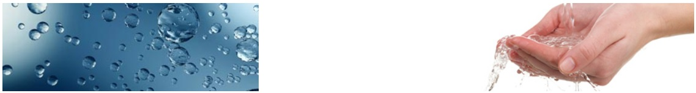

About Us
SureVac Technologies was started 15 years ago by four college graduates. It manufactures vacuum cleaning systems. Today, SureVac is a leader in vacuum cleaning technology. It sells its products through a massive network of 30 company-owned stores and 200 franchisee outlets.
SureVac today offers more than 10 products for home users and industry users. It caters to both the segments directly or through its dealer’s distribution network.
The 30 company-owned stores sell vacuum cleaning equipment directly to home and industry users while the 200 franchisees sell vacuum cleaning systems to home users only.
SureVac Systems Limited is a 21st century healthcare products company with a vision to make the world a healthy and a happy place. Pioneers in bringing the revolutionary Reverse Osmosis (RO) technology to India, KENT started its operations from Noida, India in 1999
Over the years, it has evolved as a market leader providing technologically advanced healthcare products ranging from Water Purifiers, Air Purifiers, Vegetable and Fruit Purifiers to Water Softeners. It has become synonymous with offering purity and is known for its robustness in technological performance and innovative designs enhancing quality of everyday living